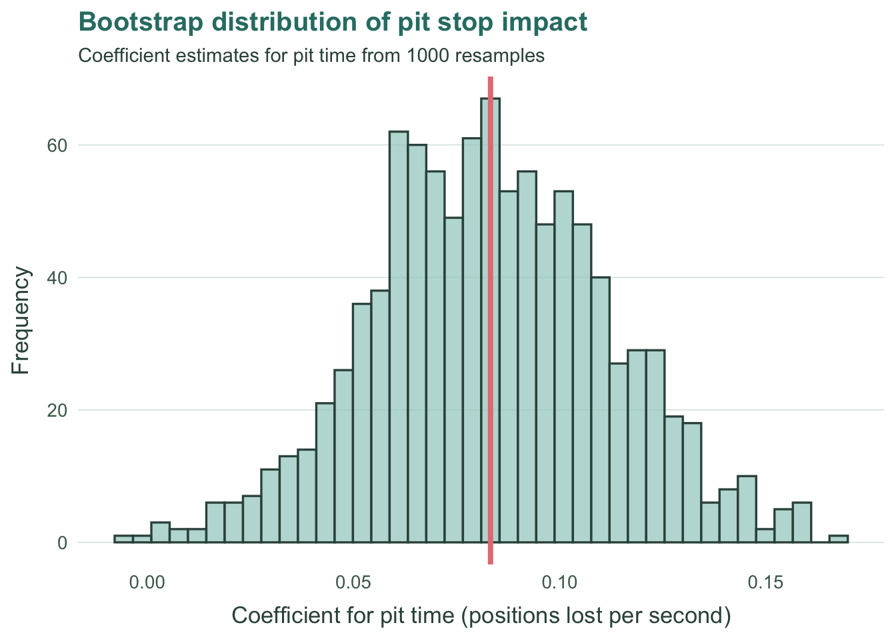

Introduction
In Formula One, every tenth of a second is sacred. Commentators often claim that pit stops decide races, but how much does a second actually matter? Does an extra moment in the pit lane truly push a driver down the finishing order, or is the fear larger than the effect?
I analysed pit-stop timing and race results across four seasons. My goal was simple. I wanted to measure the cost of one lost second.
The results were not what I expected.
Full code and reproducible scripts are available on GitHub
> Link: https://github.com/jyovika/jyovika-analytics-portfolio
Data Source
Ergast Formula One Archive, 2011 to 2024
CSV data retrieved from the public developer database
http://ergast.com/mrd/db/
Tools: R, tidyverse, ggplot2, broom, boot
Licence: Free for educational and non commercial projects
More info: http://ergast.com/mrd/terms/
Exploratory analysis
Most full pit cycles range from 18 to 30 seconds. Anything above 35 seconds usually signals damage, a hold at the release, a penalty or time lost behind cars entering or leaving the pits.
Regression: How much does a second cost?
| Variable | Estimate | Lower 95% | Upper 95% | p-value |
|---|---|---|---|---|
| best_pit_sec | 0.08403 | 0.03022 | 0.13785 | 0.00223 |
| grid | 0.40501 | 0.35920 | 0.45081 | 0.00000 |

The regression shows that each extra second in the pit lane worsens finishing position by about 0.08 places on average. Slow stops therefore matter, but not in an explosive way. A delay of two or three seconds rarely destroys a race, but the effect compounds across a season.
Small losses are harmless alone. Repeated losses change outcomes. A quarter of a place here and half a place there becomes the difference between a podium and fourth, or between finishing in the points and missing out.
By comparison, grid position has a far stronger effect. Starting one place further back costs nearly half a finishing position. Pit time matters, but track position matters more.
Bootstrapping to verify the trend
| Mean Estimate | Lower 95% | Upper 95% |
|---|---|---|
| 0.08323 | 0.0261 | 0.14157 |

Bootstrapping confirms that the effect is stable. The average value is around 0.08, with a confidence range near 0.05 to 0.11. Nearly every resampled model returned a positive relationship. Slow pit stops consistently push drivers downward.
Does the effect change over time?
| Season | Pit Effect | Grid Effect |
|---|---|---|
| 2011 | 0.23597 | 0.65066 |
| 2015 | 0.03788 | 0.61571 |
| 2019 | 0.11588 | 0.58210 |
| 2024 | 0.10105 | 0.63977 |

In 2011, a single second was costly and often race damaging. By 2015, the effect had softened, which reflects increased operational consistency and a wider field spread. From 2019 onward, the influence sits around 0.10 to 0.15, small on paper but significant when margins are measured in tenths. One second used to break a race. Today it dents it. In a tight field, even dents matter.
Which teams suffer most?
| Team | Correlation |
|---|---|
| Haas | 0.27367 |
| McLaren | 0.19495 |
| Red Bull | 0.15712 |
| Sauber/Alfa Romeo | 0.13420 |
| Racing Point/Aston Martin | 0.12759 |
| Lotus/Renault/Alpine | 0.07779 |
| Ferrari | 0.06111 |
| AlphaTauri/Toro Rosso/RB | 0.01950 |
| Williams | 0.01311 |
| Mercedes | -0.02602 |
| Virgin | -0.10628 |
| Force India | -0.19159 |
| Manor/Marussia | -0.44892 |
| HRT | -0.46338 |

Not every team pays the same price for a slow stop.
Midfield and backmarker teams such as Haas, Force India and Manor or Marussia tend to lose the most. When they fall behind, they often lack the pace to recover.
Top teams like Red Bull, Ferrari and Mercedes are more resilient. A slow stop hurts, but strong race pace lets them fight back. A delay becomes a setback, not a death sentence.
Slow stops do not destroy the fast. They destroy the fragile.
Reproducibility and code access
This analysis is fully reproducible.
All scripts for data loading, cleaning, joining, modelling and visualisation are available here:
GitHub repository: https://github.com/jyovika/jyovika-analytics-portfolio
Contents include:
• Data preparation code
• Regression and bootstrap models
• Seasonal and constructor analysis
• All plots and report scripts
• Outputs and figures
You are welcome to explore, fork or extend the analysis.
Conclusion
Pit stops matter, but not always in the dramatic way commentary suggests. One second typically costs less than a tenth of a finishing place but the impact becomes powerful when repeated across races, seasons or drivers.
Grid position remains the strongest determinant of outcome and race pace is the engine of everything. Pit crews are not out to perform miracles, they are fighting to avoid thousands of small cuts.
In Formula One, fractions are currency, and pit time is one of them.